În stînga este slide-ul din curs, în dreapta aceeași figură, calculată în browser din aceleași prognoze. Butonul ▶ modifică parametrul pas cu pas.
Rolul backtesting-ului pentru prognozele de risc · Backtesting pentru VaR: acoperire și independență · Perspectiva reglementatorului: semaforul Basel și FRTB · Backtesting pentru Expected Shortfall · Elicitabilitate și funcții de scor · Backtesting comparativ · Predicția conformală pentru tail risk (riscul pierderilor extreme) · Studii de caz: testarea ES din propriile prognoze și e-backtesting
Rolul backtesting-ului pentru prognozele de risc
Patru piețe, un model de risc
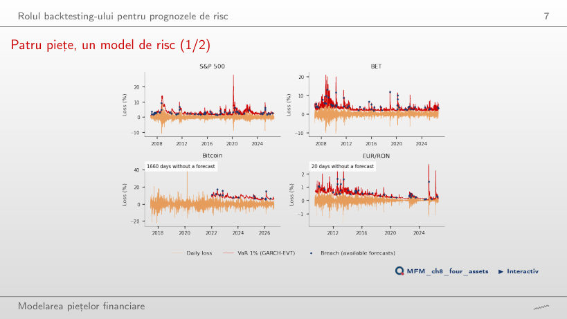
Răspuns
Nu. Rata verifică doar numărul depășirilor: 57 în 4 959 de zile. Testul Kupiec nu respinge GARCH-EVT pe S&P 500 (p = 0,302), dar testul DQ îl respinge (p asimptotic < 0,001; frecvența simulată sub procesul Monte Carlo al capitolului: 0,5%): depășirile sînt previzibile din nivelul VaR și din depășirile trecute.
Backtesting pentru VaR: acoperire și independență
S&P 500: două prognoze VaR, 2007–2026
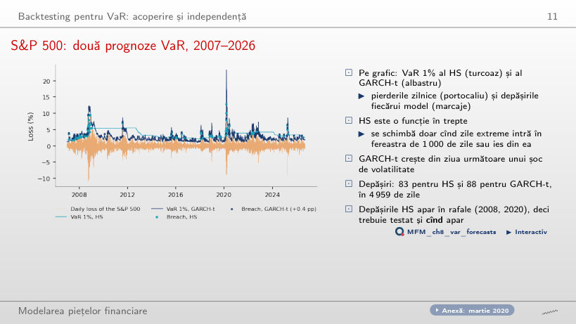
Răspuns
Numărul nu le separă: ratele sînt 1,67% și 1,77%, iar Kupiec le respinge pe amîndouă (p < 0,001). Diferența este în momentul depășirilor: HS are 26 de depășiri în 2008 și 12 în 2020, GARCH-t 8 și 6. Independența este respinsă pentru HS (LR_ind = 15,90, p < 0,001), dar nu pentru GARCH-t (p = 0,095).
Numărul acceptabil de depășiri
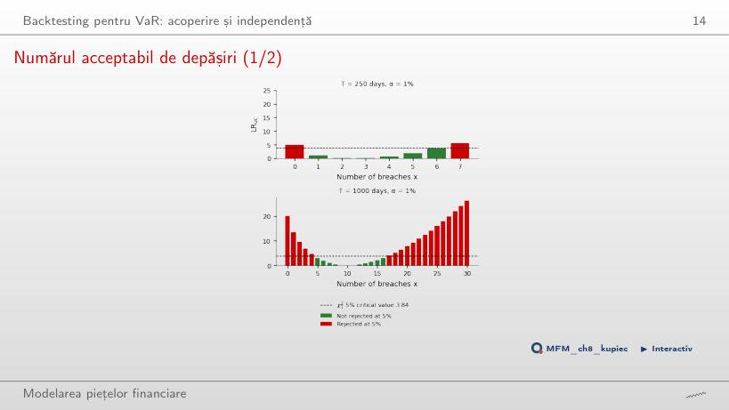
Răspuns
Da: LR_uc = −500 ln 0,99 = 5,03 > 3,84, deci VaR este prea conservator. Pe 250 de zile sînt acceptate doar 1–6 depășiri, pe 1 000 de zile 5–16. Regula LR_uc > 3,84 are mărimea efectivă 9,5% la T = 250; P(x = 0) = 8,1% contribuie cel mai mult.
Puterea testului POF
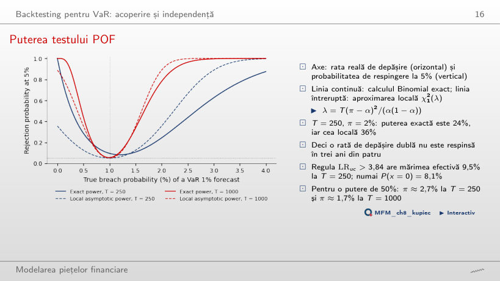
Răspuns
24%, după calculul Binomial exact; aproximarea locală χ²₁(λ) dă 36%. Pe 1 000 de zile puterea exactă urcă la 78%. O putere de 50% cere π ≈ 2,67% la T = 250 și π ≈ 1,67% la T = 1 000.
Ratele de depășire pe modele și piețe
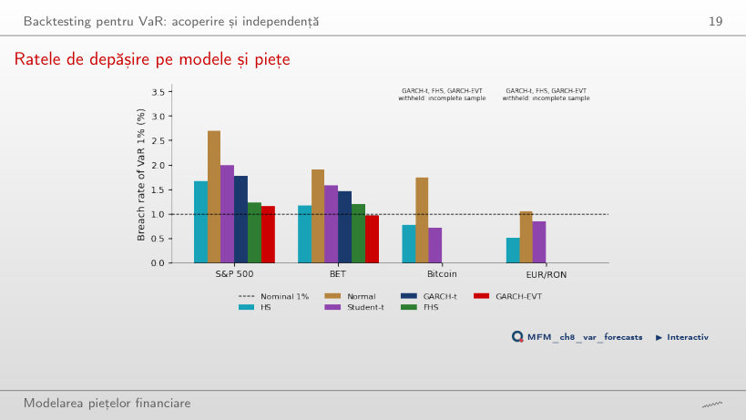
Răspuns
Pe EUR/RON: rata este 1,06%, cu p = 0,708. Pe S&P 500 (2,70%), BET (1,90%) și Bitcoin (1,74%) este respins. Pe EUR/RON, HS este prea conservator (0,51%): o criză veche rămîne în fereastra de 1 000 de zile și menține VaR ridicat.
Momentele depășirilor
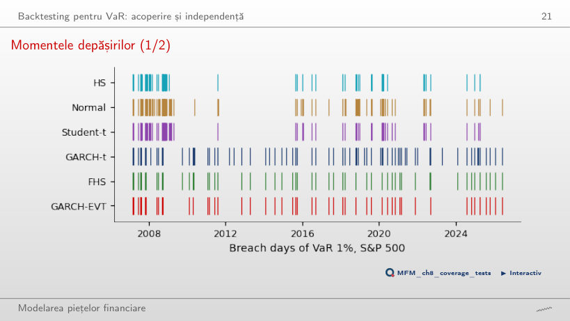
Răspuns
Nu: LR_ind = 0,95, cu p = 0,33. Estimarea π̂₁₁ se sprijină doar pe 3 perechi de depășiri consecutive (n₁₁ = 3, n₁₀ = 38). Pe întregul eșantion 2007–2026, același test respinge independența pentru HS: LR_ind = 15,90, p < 0,001.
Sinteza testelor VaR
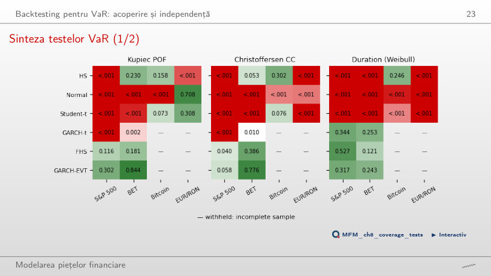
Răspuns
Da. Testul de acoperire condiționată dă p = 0,040, deci respinge la 5%, iar testul DQ dă p asimptotic < 0,001 (frecvența simulată: 0,6%). Testul duratelor nu respinge (p = 0,527). Fiecare test verifică o altă consecință a calibrării condiționate.
Perspectiva reglementatorului: semaforul Basel și FRTB
Semaforul de-a lungul timpului
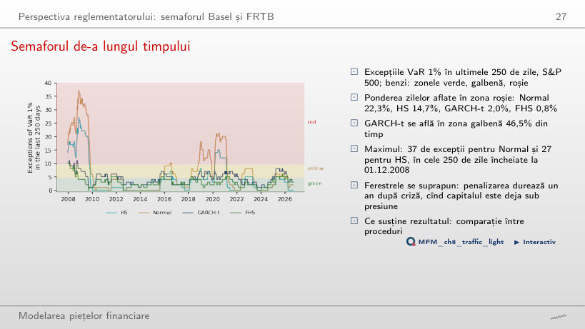
Răspuns
Normal 22,3%, HS 14,7%, GARCH-t 2,0%, FHS 0,8%. GARCH-t este însă în zona galbenă 46,5% din timp. Maximul pentru Normal (37) și HS (27) cade în fereastra încheiată la 01.12.2008; penalizarea rămîne activă încă un an după criză.
Backtesting pentru Expected Shortfall
Reziduurile de depășire pe S&P 500
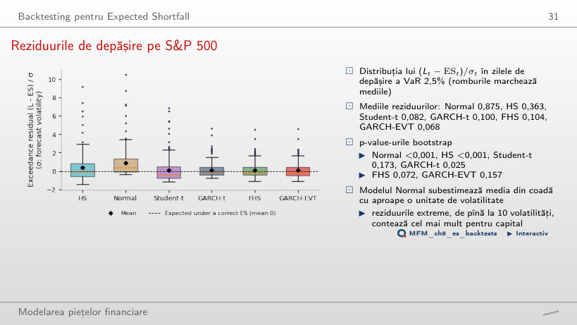
Răspuns
GARCH-t are mai multe zile de depășire a VaR 2,5%: 198, față de 128 pentru FHS. Cu medii aproape egale, statistica t crește cu √N: 1,73 pentru GARCH-t, 1,34 pentru FHS. p-value-urile bootstrap sînt 0,025 și 0,072.
Z₂ pe ferestre rolling de 250 de zile
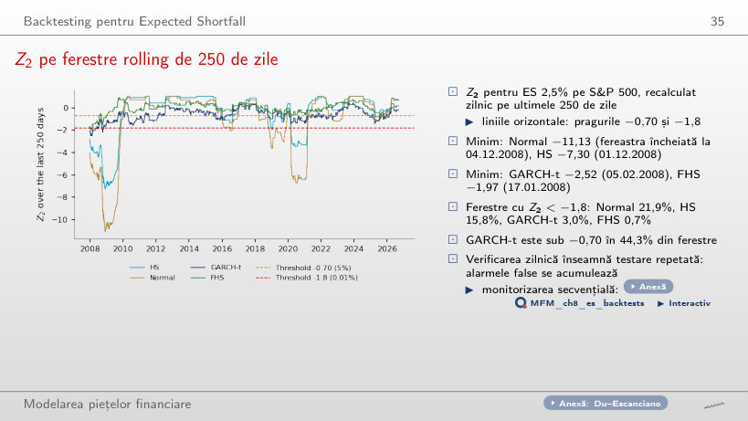
Răspuns
În 44,3% din ferestre; sub −1,8 doar în 3,0%. Pragul −0,70 este valoarea critică de 5% pentru T = 250, deci o verificare zilnică produce multe alarme. Minimul GARCH-t este −2,52, în fereastra încheiată la 05.02.2008.
Sinteza testelor ES
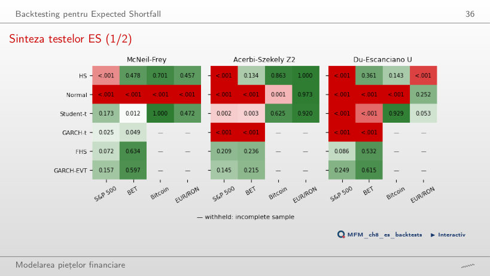
Răspuns
Z₂ îl respinge: Z₂ = −0,723, cu p = 0,002. McNeil–Frey compară doar mărimea pierderilor în zilele de depășire, iar Z₂ cumulează frecvența și mărimea. Student-t depășește VaR 2,5% în 4,19% din zile.
Elicitabilitate și funcții de scor
Elicitabilitatea, ilustrată grafic
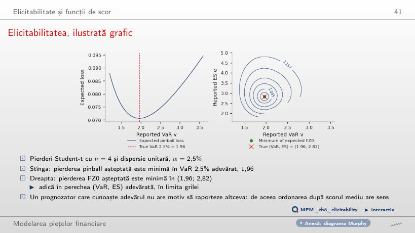
Răspuns
În VaR 2,5% adevărat, 1,96: derivata F(v) − (1 − α) se anulează în cuantilă. Pierderea FZ0 așteptată atinge minimul în (1,96; 2,82), perechea (VaR, ES) adevărată, în limita grilei. Nicio funcție de scor care depinde doar de ES nu are această proprietate.
Backtesting comparativ
Pierderea FZ0 medie pe modele
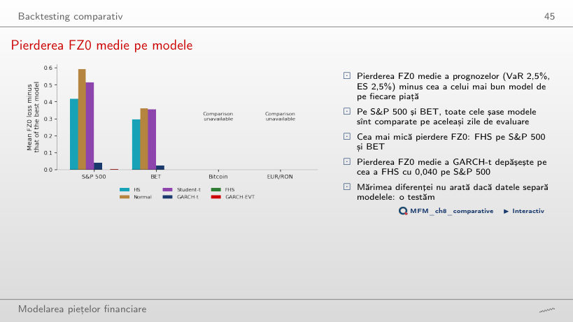
Răspuns
Da: DM = 2,66, cu p = 0,008 și q = 9 laguri Newey–West. GARCH-EVT diferă de FHS doar cu 0,003 (DM = 1,24, p = 0,21). Pe BET, FHS are tot cea mai mică pierdere FZ0 medie.
Teste Diebold–Mariano pe perechi, S&P 500
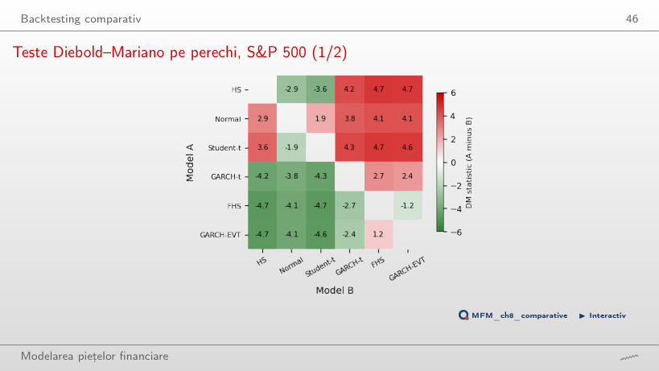
Răspuns
Modelul Normal are pierderea FZ0 medie mai mare, deci este mai slab, iar diferența este semnificativă la 5%. O cuantilă empirică, deși se ajustează lent, este superioară unei cozi subțiri. 13 din cele 15 perechi diferă semnificativ la 5%; excepțiile sînt Normal–Student-t (1,94) și FHS–GARCH-EVT (−1,24).
Modelele reținute în MCS
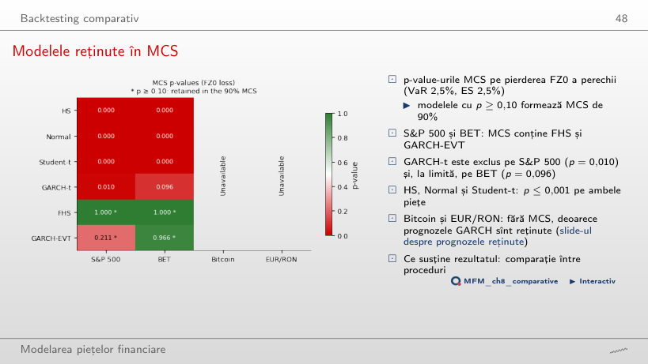
Răspuns
FHS (p = 1,000 pe ambele piețe) și GARCH-EVT (p = 0,211 pe S&P 500, peste 0,96 pe BET). GARCH-t este exclus pe S&P 500 (p = 0,010) și, la limită, pe BET (p = 0,096): cu α_MCS = 5% ar rămîne în MCS pe BET.
Predicția conformală pentru tail risk (riscul pierderilor extreme)
VaR conformal în perioada COVID-19
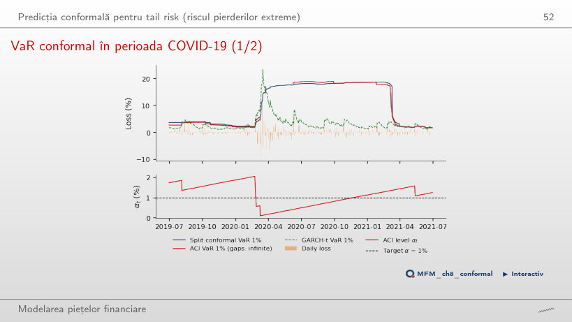
Răspuns
Conformal split 6, ACI 4 (8% din cele 50 de zile). ACI a fixat VaR = ∞ în 37 din aceste zile, iar α_t a coborît pînă la 0,09%. Conformal split rămîne apoi în jur de 18% timp de un an, pentru că scorurile din martie 2020 rămîn în mulțimea de calibrare de 250 de zile.
Acoperirea în perioade calme și de criză
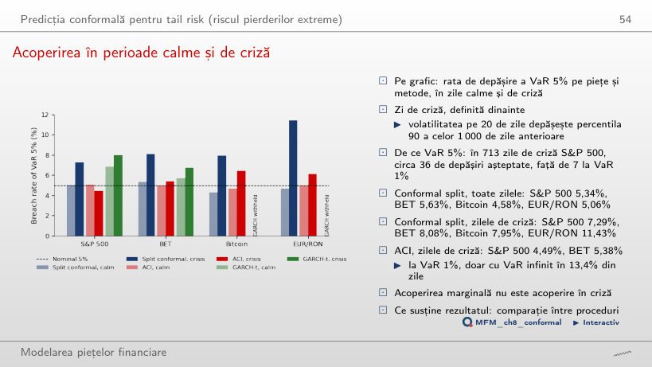
Răspuns
7,29%, în cele 713 zile de criză; pe EUR/RON ajunge la 11,43%. ACI coboară rata în criză la 4,49% pe S&P 500 și la 5,38% pe BET. Acoperirea marginală nu garantează acoperirea în criză.
Studii de caz: testarea ES din propriile prognoze și e-backtesting
Studiu de caz (3/4): cozile contează mai mult decît reestimarea
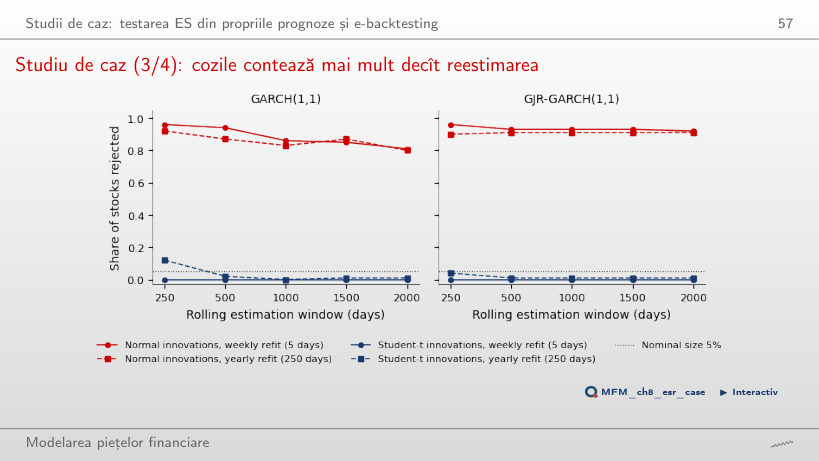
Răspuns
Între 0,80 și 0,96 în toate cele 50 de celule (5 ferestre × 5 frecvențe ale reestimării × GARCH/GJR-GARCH). Cu inovații Student-t: cel mult 0,12 la ferestre de 250 de zile și cel mult 0,01 la ferestre de cel puțin 1 000 de zile. Coada distribuției contează mai mult decît frecvența reestimării.
E-backtesting: e-procesele ES 2,5% pe S&P 500 și BET
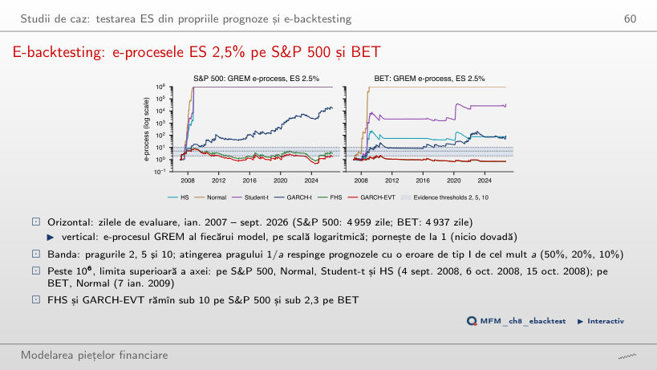
Răspuns
La pragul 10, adică cu o eroare de tip I de cel mult 10%, nu: maximul 8,55 este atins la 29.09.2008, iar valoarea finală este 3,31. Pragul 5 (cel mult 20%) este atins la 01.11.2007. Cu ES majorat cu 10%, maximul scade la 3,38: aici, prognoza mai prudentă produce mai puține dovezi împotriva ei, deși e-procesul adaptiv nu este garantat monoton în ES.
Pierderi zilnice (randamente logaritmice cu semn schimbat) pentru S&P 500, BET și Bitcoin, prețuri EODHD, și pentru EUR/RON, cursul de referință BNR. Prognoze VaR și ES la o zi pe o fereastră rolling de 1 000 de zile, evaluate din ianuarie 2007 (EUR/RON din iunie 2009, Bitcoin din iunie 2017) pînă la 18 septembrie 2026. Studiile de caz: Tabelul 3 din Bayer și Dimitriadis (2022) și replicarea lui pe 11 acțiuni din S&P 500; e-procesele din Wang, Wang și Ziegel (2026), calculate din prognozele ES 2,5% ale capitolului.